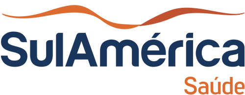
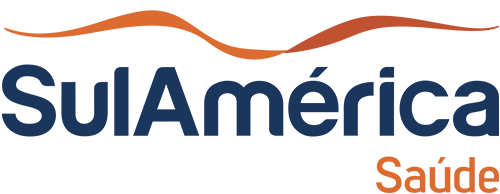

Com uma trajetória marcada pela precisão e confiabilidade, o Laboratório Aldeia tem sido um pilar de qualidade em Tatuí. Com mais de 3 anos de experiência no setor, nossa dedicação à excelência nos serviços de análises clínicas consolidou nossa posição como uma referência local em diagnóstico e cuidado. Agora, estamos entusiasmados em expandir nossos horizontes e levar a mesma qualidade e compromisso para novas localidades: Sorocaba e Boituva.
Nossas novas unidades em Sorocaba e Boituva foram cuidadosamente planejadas para refletir o padrão de excelência que estabelecemos em Tatuí. Em cada nova localização, você encontrará nosso compromisso inabalável com a precisão dos resultados e o cuidado com o bem-estar dos nossos pacientes, que têm sido a base da nossa reputação ao longo dos anos. Equipados com tecnologia de ponta e um ambiente moderno e acolhedor, nossas novas instalações foram projetadas para garantir um atendimento eficiente e de alta qualidade.
Nossa equipe é composta por profissionais altamente qualificados, incluindo médicos e técnicos especializados, que estão continuamente atualizados com as últimas práticas e avanços na área da saúde. Isso nos permite oferecer uma gama completa de serviços, desde exames de rotina e diagnósticos especializados até acompanhamento de tratamentos com um nível de precisão e confiabilidade que nossos clientes conhecem e confiam.
Além de nossa competência técnica, o Laboratório Aldeia se orgulha de oferecer um atendimento humanizado. Cada membro de nossa equipe está comprometido em proporcionar uma experiência acolhedora e suportiva, reconhecendo a importância de um atendimento que vai além da técnica e toca a dimensão humana do cuidado.
Convidamos você a visitar nossas novas unidades em Sorocaba e Boituva e experimentar pessoalmente a qualidade que nos tornou a escolha preferida em Tatuí. No Laboratório Aldeia, sua saúde e bem-estar são nossa prioridade, e estamos ansiosos para demonstrar por que somos a escolha certa para suas necessidades de análises clínicas. Venha nos conhecer e descubra como podemos contribuir para o seu cuidado e bem-estar com a mesma dedicação e excelência que você já conhece.
 
